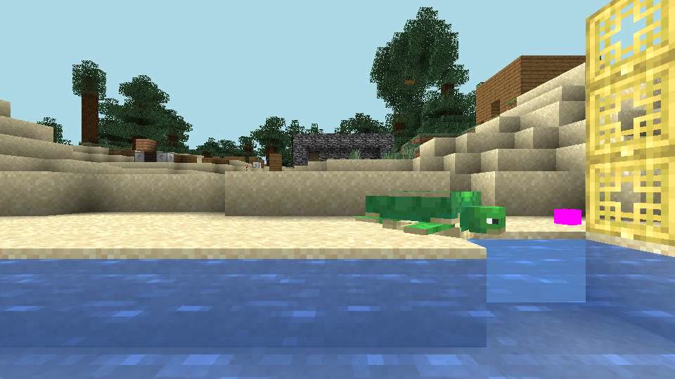
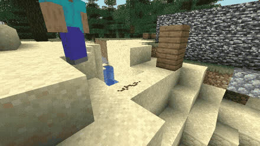
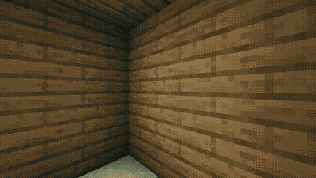

Give an LLM a body.
A Minecraft bot that is a real agent — it perceives, acts, remembers, survives, hires help, and answers you by chat, voice or phone.
git clone https://github.com/cagataycali/strands-minecraft

demo-creeper.gif, uncut.- 60
- tools
- 100%
- of mineflayer covered
- 74
- test files
- 18.6k
- lines of TypeScript
Watch it think.
Two uncut captures from the bot's eyes. One instructed, one not.

you> dig the blocks in front of you, then put them back
Try it. One line, end to end.
One real exchange from the README, in the grammar src/index.ts prints: prompt, tool call, reply, status block, journal.
-
You say
you> keep mining until you have 64 iron, I'll be around -
It calls a tool
# → start_journey goal="mine until 64 iron_ingot in inventory" -
It answers in the game
🤖 On it — journey jm3kq2 started. Ask me anything while I dig. -
Every step opens with the digest —
formatDigest, ≤ 600 chars, zero tool callsYour status right now: HP 20/20 food 17/20 · (118, 42, -38) overworld, survival time: day threats: none in radar range bag: 4 meal(s), 12 torch(es), 41 building block(s) | tools: iron_pickaxe, stone_shovel | weapons: iron_sword journey: jm3kq2 "mine until 64 iron_ingot in inventory" step 1 — last: find_blocks iron_ore,deepslate_iron_ore exposed=false → 3 veins; tunnelling -
It works while you don't — each line ends in a measured
[Δ …], not the model's account of itself🧭 [jm3kq2 #1] find_blocks iron_ore,deepslate_iron_ore exposed=false → 3 veins; tunnelling [Δ +9 cobblestone] 🧭 [jm3kq2 #2] dig_vein at (118, 42, -37) → 5 raw_iron [Δ +5 raw_iron, moved 21m]
Same lines as the README's Ten minutes with it; the digest is the output of src/digest.ts for that step.
One session. Seven rails.
Game chat, the you> prompt, push-to-talk, a realtime call, the dashboard, a phone call, your tiny — all write into one shared history.
A nervous system, not a chat loop.
Most of what keeps the bot alive never touches the model.
-
⚡ Reflexes300 ms tick · zero tokens
Lava → water bucket or flee. About to die → disengage. Creeper in blast radius → sprint. Stuck 20 s → shake loose. Idle: eat, wear better armor, grab drops.
-
👂 Sentinelevent-driven · zero tokens
Hears primed TNT and creepers, radar-tracks hostiles, names your attacker, notices dusk, chests opened behind your back — and tells the agent in one edge-triggered note.
-
📋 Digestper self-prompt · ≤ 600 chars
Every thinker cycle and journey step opens with one status block — vitals, threats, bag, journey, workers — so the model reasons from state instead of spending a tool call asking.
-
🧭 Critic & ledgersper journey step
Each step's journal line gets a measured
[Δ +12 cobblestone, -2 hp, moved 34m]tail — narration can't hide a stall. Finished goals land in acompletedledger, failures intoo_hard.
Say it once. Walk away.
Journeys iterate toward a goal for hours. The fleet hires worker bots — real second bodies — when a job splits.
60 tools. If mineflayer can do it, the agent can.
Every game mechanic has a tool or a written reason it doesn't — the audit.
Hover or tap a tool — the line is its real description: from the source, first sentence, nothing rewritten.
Your bot as a device.
Optional. Enroll it and your personal AI at tiny.technology sees through its eyes and sends it to work — from web, phone or watch.
npm run enroll -- --endpoint https://minecraft.yourdomain.com
# = npx tiny-tech enroll --body strands-the-miner · or set MINECRAFT_PUBLIC_URL| route | gate |
|---|---|
GET /api/health | public |
GET /api/telemetry | token |
GET /api/camera/snapshot | token |
GET /api/stream.mjpeg | token |
GET /api/events | token |
POST /api/chat | token |
POST /api/stop | token |
Run it.
The whole rig — Minecraft server, bot, dashboard — in one command. Or bare metal, if you want the microphone.
git clone https://github.com/cagataycali/strands-minecraft && cd strands-minecraft
cp .env.example .env # AWS_* for Bedrock by default
docker compose up -d # server + bot · dashboard on :3008npm install
cp .env.example .env # credentials + MC_HOST/MC_PORT
npm start # bot joins, you> prompt opensBedrock by default; OpenAI or Anthropic with one env var (STRANDS_MODEL_PROVIDER) and their SDK package. Give the Docker VM at least 6 GB (8 GB with fleet workers) — the bot checks its headroom at boot and says so in one line.
How it compares.
Voyager and Mindcraft are about learning to play. This is about a body. Every claim below is quoted from each project's own README.
| criterion | strands-minecraft | Mindcraft | Voyager | mineflayer alone |
|---|---|---|---|---|
| the model drives | 60 typed tools = 100% of mineflayer | chat actions; optionally "write/execute code on your computer" (off by default) | "an ever-growing skill library of executable code" | your JavaScript/Python |
| models | Bedrock default; OpenAI, Anthropic via one env var | 18 APIs incl. openai · google · anthropic · ollama (local) | "OpenAI's GPT-4" | none |
| when the model is asleep | 300 ms reflexes + sentinel, zero tokens | — | — | everything is your code |
| more than one body | manage_bots hires workers; independent compose projects | --profiles andy.json jill.json | a single agent | as many as you write |
| how you reach it | game chat · CLI · push-to-talk · realtime call · dashboard · phone · tiny | game chat · web UI (:8080) · TTS narration (speak_model) | Python API (voyager.learn()) | your code |
| runs on | Node ≥ 22, Docker compose with the server | Node 18/20, Minecraft ≤ 1.21.11 | Python ≥ 3.9 + Node ≥ 16, Fabric 1.19 mods | Node, Minecraft 1.8 → 26.1 |
Same rows as the README's How it compares.
Read deeper.
The audits and the incident write-ups that shaped the code. Each hook is the file's own first sentence; reading time is counted, not guessed.
- Coverage auditEvery game mechanic mineflayer exposes (per mineflayer/docs/api.md) vs the agent tools in src/tools/.5 min · COVERAGE.md
- Hardcoding doctrineNorth star: tools carry MECHANISM (verified world access), the MODEL carries POLICY (decisions, thresholds-as-judgment, action selection).8 min · HARDCODING.md
- The anatomy of a 4 GB OOMIssue #44. A soak died at 4,050MiB heap / 4,148MiB RSS after exactly 51 minutes, and the final scavenge stopped the world for 4,338ms to reclaim 5MiB of 4,050MiB — nearly the whole heap was still reachable.5 min · MEMORY.md
- Incident write-ups8 write-ups, e.g. “A repeat grave has to say what to CHANGE — and must not invent the killer”33 min · 8 files
- SecurityPlease do not open a public issue for a vulnerability. Use GitHub's private security advisory for this repository.2 min · SECURITY.md
- AGENTS.md for contributorsGuide for AI coding agents working in strands-minecraft — a Minecraft bot where every bot is a Strands agent and the full mineflayer surface is exposed as tools.7 min · AGENTS.md